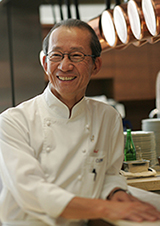

Cuillere
当店のメニューは、素材の持ち味を最大限引き出すことを重んじた ランチ、ディナーとも「おまかせの１コース」のみです。
旬の素材により、メニューの内容はたえず変化していきます。
自分たちの考えるもの、やれる事の全てを出来るだけ妥協せずに提供し、 なお且つお客様の要望も可能な限り聞いて差し上げたい。
また、新しいメニューを開発したり実験や試作などを行う場でもあります。
「食事やワインを楽しむ場として、出来るだけ妥協のない店」、 それを望む人にとって理想的なレストランでありたい。

Chef 越智健太郎
2000
パリ１６区の「アトランス」（現在、三ツ星）でシェフのパスカル・バルボに師事。
2004
「アトランス」にてシェフに次ぐポジションのスーシェフに就任。
2005
スペインのサン・セバスチャンで開かれた、料理界でもっとも権威のある
ガルシア・サントス主催の学会＜LoMelor de la Gastronomia＞に招かれ、
バスカル・バルボシェフと共にデモンストレーションを披露。
その後「アトランス」を退社し帰国。
2006
「レストラン カンテサンス」を立ち上げる。
2007
「ミシュランガイド東京 2008.」で三ツ星を獲得。
以降、2009、2010、2011年度版でも三ツ星を頂く。
2011
運営会社の株式会社グラナダから独立し、オーナーシェフとなる。